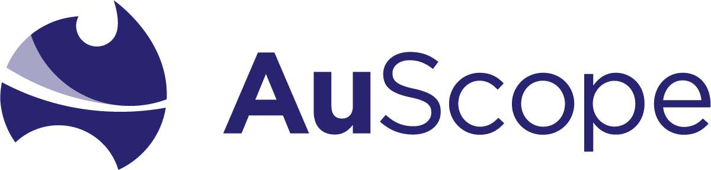
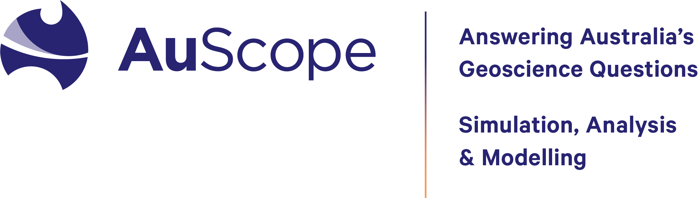

GPlates
development by the EarthByte Project is part
of the AuScope
infrastructure-development programme.
AuScope Ltd is a non-profit company formed to
facilitate the implementation of a world-class infrastructure system for earth
science, funded by the Australian Government under the
National Collaborative Research Infrastructure Strategy (NCRIS).
The EarthByte Project participates in one of the components of the AuScope programme:
As part of this participation, GPlates developers at the EarthByte Project collaborate with other AuScope project, including:

The goal of the
Simulation, Analysis & Modelling (SAM)
component is to build a toolkit of simulation, modelling,
inversion and data mining tools.
The EarthByte Project participates in the AuScope Modelling & Simulation component to develop GPlates to provide kinematic surface-constraints for geodynamic simulation software such as the widely-used, open-source, spherical mantle-convection package CitComS and the next-generation AuScope-funded mantle-convection package Underworld.